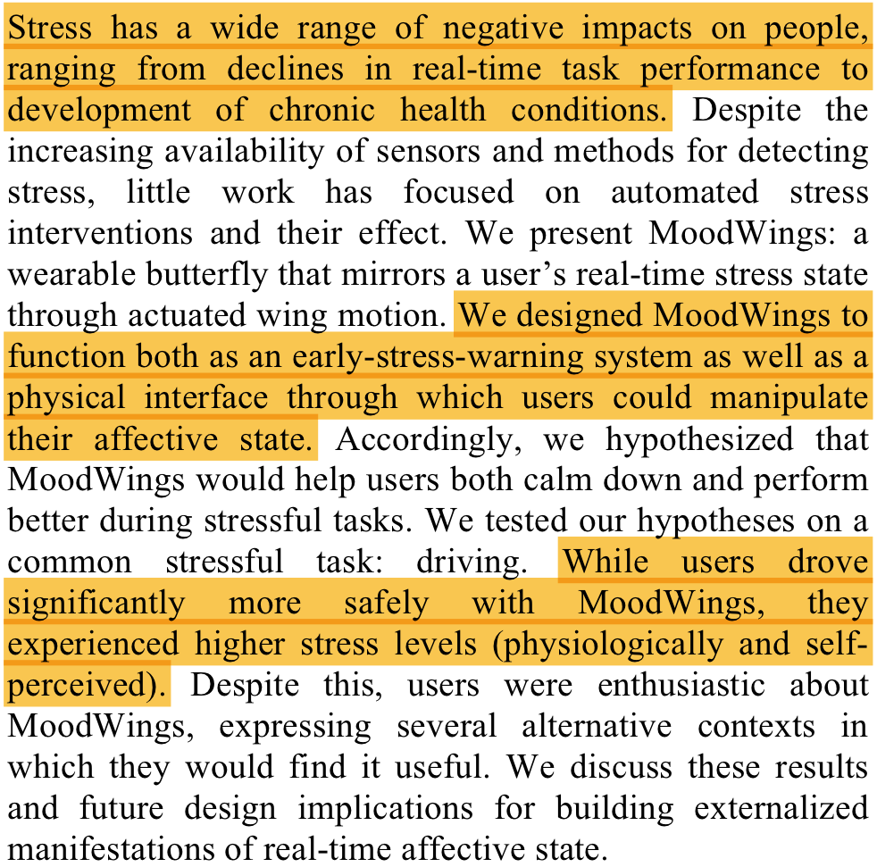
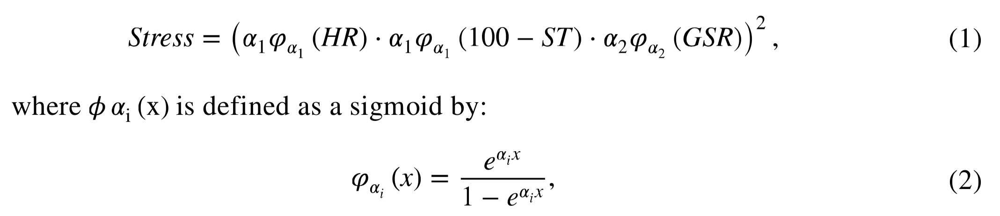

Anti-Anxiety Wearable
A wearable biofeedback device that monitors anxiety and intervenes when the user becomes stressed.
Wearable Biofeedback Device (2013)
Microsoft explored using a wearable butterfly (weird choice, I know) to report user stress and initiate active manipulation of the user’s affect (science jargon for “making themselves feel better”). Specifically, they measured electrical activity in the heart (an ECG) and electrical conductance in the skin (an EDA) to quantitate agitation.
“MoodWings: A Wearable Biofeedback Device for Real- Time Stress Intervention.” MacLean et al. Microsoft Research. 2013. [.pdf]

Big Idea: Users really liked the device, but it made them quantifiably more stressed. This might be important for you guys to keep in mind, since it doesn’t really matter if it makes you more stressed in an already-stressful situation, but it might be impractical for a user who wants to use it constantly.
Measuring Stress (2013)
This study used a smartphone-based Positive and Negative Affect Schedule survey and heart rate variability monitoring (which is calculated from ECG tracing) to measure employee stress at work. Their system wasn’t super accurate (maximum ~60%), but it endorses the idea of wearables for reliable measurement.
“Towards Measuring Stress with Smartphones and Wearable Devices During Workday and Sleep.” Muaremi et al. BioNanoSci. 2013. [.pdf]
Big Idea: The iPhone app isn’t a bad idea, although I think the survey is a cop-out. Rather, I think it’d be useful to be able to track your stress data on your phone and set notification preferences, etc. As for heart rate variability as a biofeedback metric, a more recent meta-analysis of 24 studies with 484 participants showed that HRV biofeedback training was “associated with a large reduction in self-reported stress.” [.pdf]
Stress Quantification (2016)
This is a really neat math paper that tracks heart rate, skin temperature, and galvanic skin response (an electric conductance test) to assign a numeric stress score. They gave users a wearable tracker and let them track their own stress reports over a period of several months, which showed that users self-educated on more effective stress relief techniques over time as they monitored their data.
“Stress Quantification Using a Wearable Device for Daily Feedback to Improve Stress Management.” Mancilla et al. Springer International Publishing Switzerland. 2016. [.pdf]

Big Idea: The two plots above are from a user’s data ~4 months apart. You guys might even consider using these figures as representative of your device’s effects in your project! This kind of wearable (monitoring HR, ST, and GSR) could be a wristwatch; other publications have explored measuring electrical activity in the brain (EEG) using wearables like glasses and headsets: [.pdf], but these were focused on “anxiety” more than the comparatively simple metric of “arousal” (interpreted as stress).
Calming Effect of a Wearable (2017)
This study looks at using a wristwatch-like device that delivers a slow pulsing beat to the user. You can read the study design below (it’s a classic scientific approach called a “single-blind”) and see the data they collected. It’s convincing! (And, this journal is super reputable and difficult to publish in.)
“The calming effect of a new wearable device during the anticipation of public speech.” Azevedo et al. Nature Scientific Reports. 2017. [.pdf]
Big Idea: This pulse system might be a good way to de-stress your user! They only measured reported anxiety and skin conductance, so it might be interesting to have your device record some additional metrics like skin temperature and heart rate.
Summary Recommendations
Constant stress-monitoring might increase short-term stress, which might be unacceptable for some demographics. However, short-term applications of stress intervention (like the calming effect of the doppel device above) might be highly effective. Additionally, there are quantitative approaches to measuring stress and evidence suggests that long-term monitoring might improve self-management of stress. Finally, the best metrics for measuring stress appear to be heart rate, skin temperature, and electrical skin conductance.